UX Design Internship @ Tencent Music Entertainment
实习述职报告
周涵禹 Hanyu Zhou
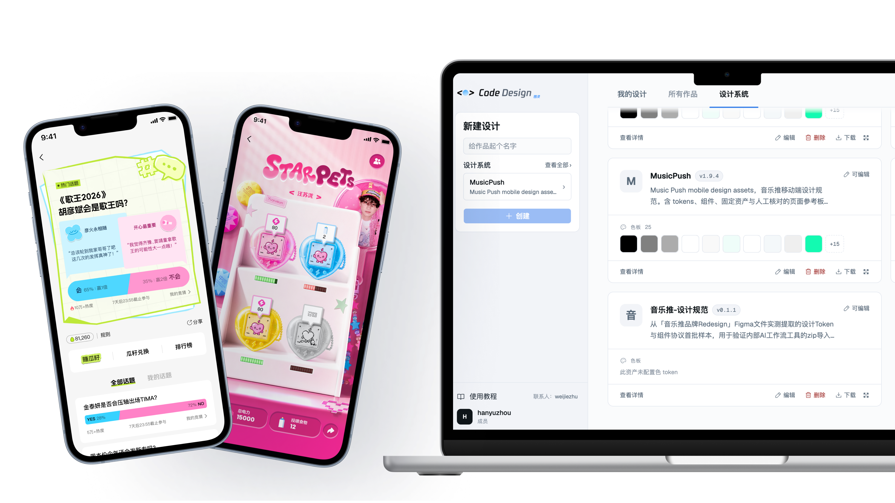
实习产出
01
提效
AI设计生产工作流
负责从规范梳理、工具链搭建到工作流验证的全过程，在音乐推B 端完成验证，并沉淀为可复用的团队资产。
背景介绍
业务概述
音乐推-歌曲推广营销工具
音乐推是QQ 音乐商业化业务下的音乐推广工具，服务音乐厂牌和粉丝。音乐推B 端则是为厂牌设计的专业推歌工具。
现存问题
设计规范未落地，重复表单效率低
品牌色和视觉风格已更新，但设计规范尚未落地，大量重复表单只能逐页手搓。

为什么音乐推B端适合AI生产？
01
结构固定
页面范式可以被规则化表单、列表与操作控件，可收敛为有限的 Token 和组件档位。
02
组件复用高
一次定义，可以覆盖多场景同类组件贯穿选歌、建单、投放与复盘全业务链路。
03
快速验证
AI 可快速产出多套交互框架音乐推B端十分依赖售卖业务的交互逻辑，而AI可以快速验证。
行业常见AI设计路径
业务需求
提示词 / 参考图 / PRD
生成方案
Figma Make / 图灵 /
Stitch / Claude Design
人工验收
质量与业务判断
设计/代码交付
Figma / Builder / Locofy
设计规则约束
Token / Components / DESIGN.md
接入设计资产
Figma MCP / Code Connect
音乐推B端AI生产闭环：明确人机分工
AI负责读取与执行，设计师负责规则定义与质量判断
AI Agent：提取现状
连接Figma画布读取设计稿
设计师：定义规则
收敛冲突 / 裁定优先级与约束等级
图灵模型：生成界面
按规则组合并生成界面
设计师：校验回流
质量与业务判断，并回写规则
借助AI提取规范
从Figma源文件，到可复用的设计资产
Step 1
AI Agent安装Figma插件
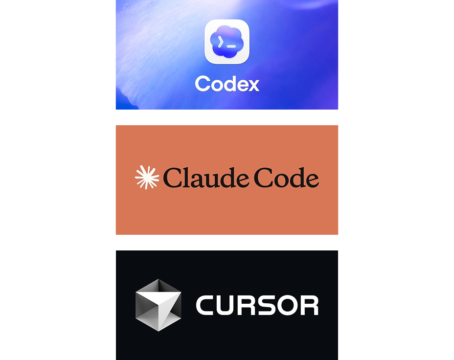
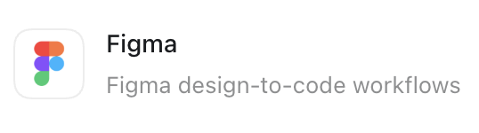
Step 2
把视觉稿的Figma画布链接发给AI
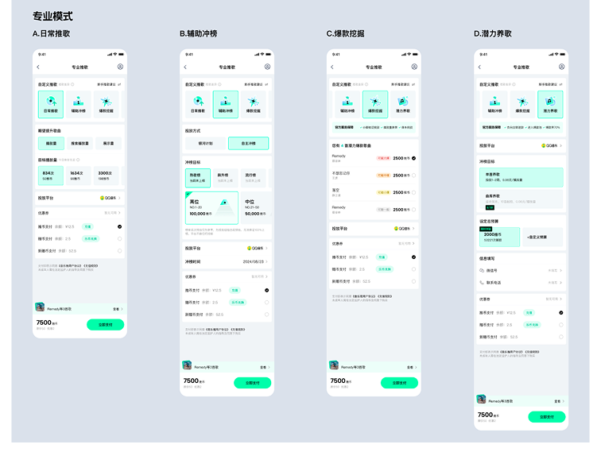

Step 3
AI输出视觉版或结构包版本的规范
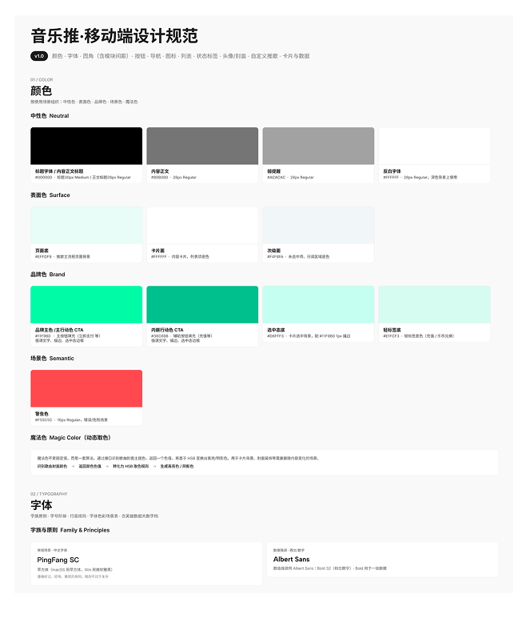

规范走查统一
AI 完成归集，设计师完成定义
字号缩减
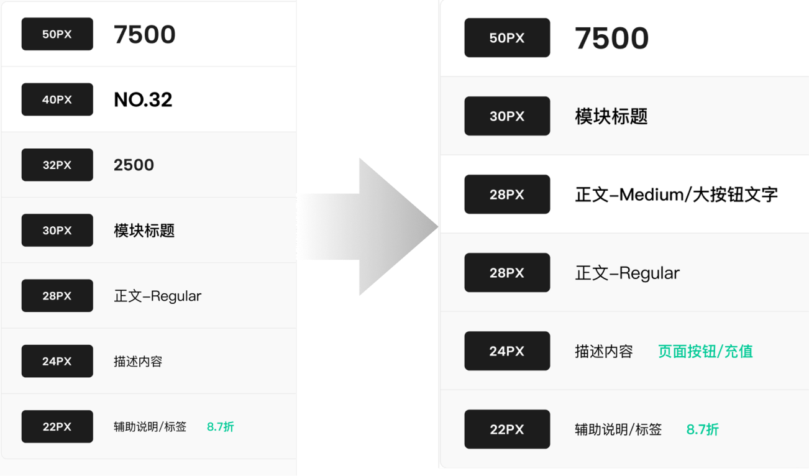
按钮统一
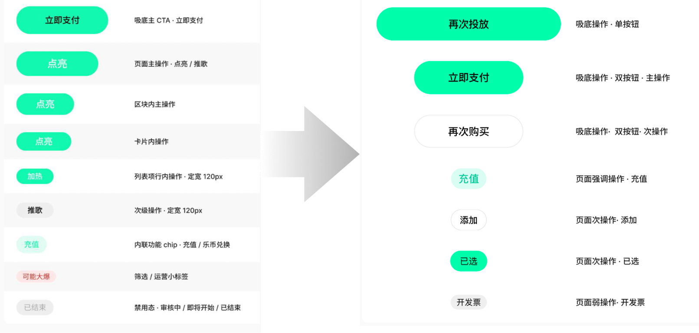
提取阶段拿到两个几乎一样的绿色，AI无法判断哪个是品牌色。人工核对规范后确认 #11F9B0 为准，#00FFB7 是历史遗留的偏差，随后写入规范包，后续生成不再复现。
音乐推设计规范
01 基础规范
02 组件规范
03 典型页面
沉淀设计资产
设计规范给设计师读，结构包给机器读。按照视觉版规范输出结构包后，上传至图灵，沉淀为可复用的团队资产。
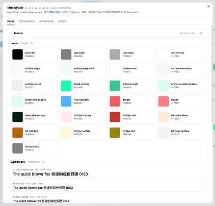
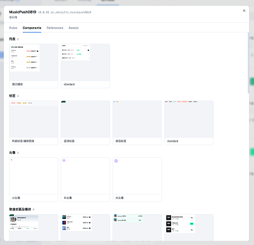
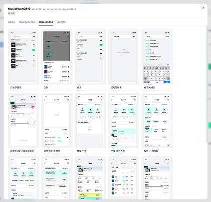
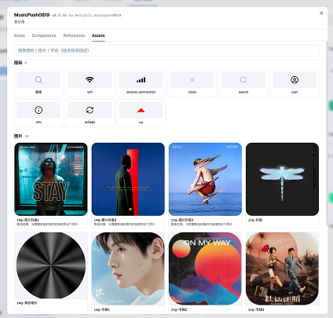
持续迭代 让AI更高质量产出
不要反复修同一张图；把共性问题写回规则。
01
整理规范
02
AI 生成
03
设计师 Review
04
发现问题
05
修正规则
06
再次生成
规则太多
重复、冲突、过时内容会制造噪音
规则太少
约束不足，AI 开始自行发挥
有效规则区间：足够明确，但不过度约束
图灵生成：智能化投歌
快速验证 利用结构包，图灵可准确按设计规范出图，验证 AI 对话下单模式的交互逻辑。
Round 1


Round 2
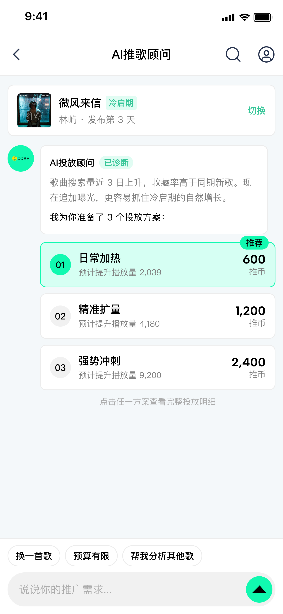
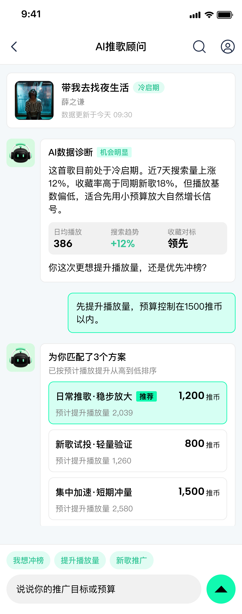
Round 3
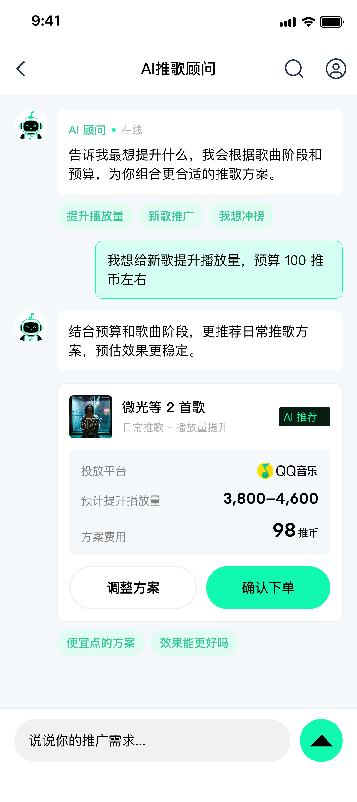
方法外延 · 交互设计师如何使用 AI
怎么用 AI 才有价值
AI 最擅长把可能性列全，最不擅长决定哪个重要。
需求背景梳理
把 PRD 丢给 AI 做摘要
找出 PRD 里没定义、没依据的地方
哪个信息不确定，会导致方案推倒重来？
场景延伸
让 AI 自由联想“使用场景”
以主流程为基准，列全未覆盖的情况
哪些必须做，哪些这一版明确不做？
方案预演
让 AI 生成通用用户旅程
假设方案已经失败，反推用户为什么不用
哪些风险会在真实用户群体里发生？
可复用化 · 下一步
把稳定下来的判断标准固化为 Skill
和结构化规范包同一个动作：把判断写成机器能读、能反复执行的文件。
02
收入增长
押个乐子
负责从行业调研、机会点判断到 0–1 玩法设计的全过程，目前正在跟进开发走查。
项目背景
核心玩法跟QQ音乐站内做过的世界杯猜球相似，本质是让用户去猜一个客观事件的结果，猜对了有奖励拿。这个玩法起源于海外很火的预测市场平台，Kalshi 和 Polymarket。
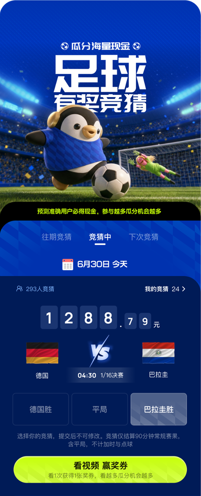

市场规模
音乐预测不只是小众尝试
仅“超级碗中场秀开场曲”一个话题的交易额
数据来源： Billboard，2026
世界杯竞猜已验证“看广告换投注机会”可行；海外预测市场则证明同类机制能形成持续参与。
商业逻辑
用户能获得什么
积分 + 话题参与
- 投票、做任务、看广告都能赚积分（瓜籽），可用于兑换会员体验卡与大牌小样。
- 同时表达判断、围观结果，把围观变成参与。
我们能获得什么
广告收入
用户为赚积分、参与话题而主动看激励视频，业务因此获得广告收入，并把话题悬念转化为持续回流。
奖励从哪来 发放给用户的积分与奖励，由广告主预算承接，平台不额外贴钱，形成可循环的商业闭环。
竞品分析
对照 Polymarket 投机社区与 Kalshi 金融交易所，看现有预测市场有哪些可借鉴的设计点。
01
实时查看赔率


赔率随赛况实时跳动，判断被做成可比较的数字。
02
实时计算奖金


投入金额立刻换算潜在回报，选择带上博弈感。
03
实时聊天与阵营标签


每个话题有实时聊天室，发言会带上阵营标签，把预测变成可围观的社交行为。
04
音乐类话题


Kalshi 已把歌手与播放量做成可交易话题，音乐场景可直接迁移。
参与动机和设计机会点
用户参与由三类动机驱动：物质回报、立场表达、预测悬念。设计分别用积分体系、评论外显、实时反馈来承接。
实在回报
愿意花时间换点东西
瓜籽任务与兑换体系
投票、任务、广告形成获取路径，参与有成本也有回报
表达立场
有观点，希望被看到
投票与阵营标签
投票立场在评论区外显，判断可被围观
揭晓悬念
关心走势，也关心什么时候揭晓
实时占比与开奖提醒
浮动赔率即时反馈，倒计时拉回揭晓
核心玩法设计
把投票行为收束成一条清晰路径：发现感兴趣的话题，完成投票，查看走势，再等待结果揭晓。
构建目标明确、反馈即时的投票路径
- 热门话题
- 功能入口
- 话题广场
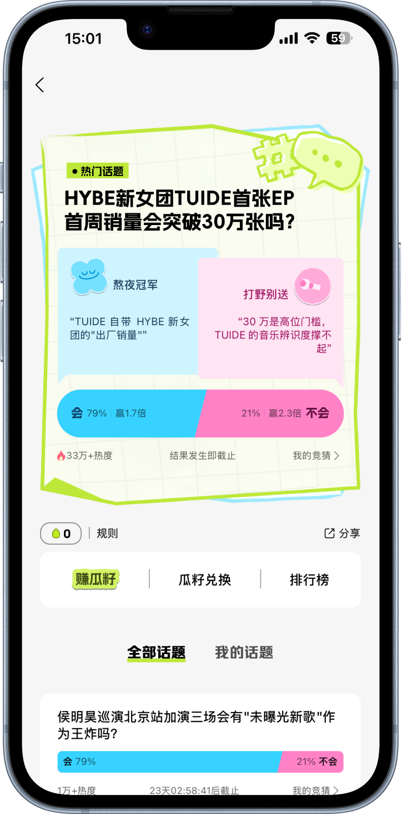
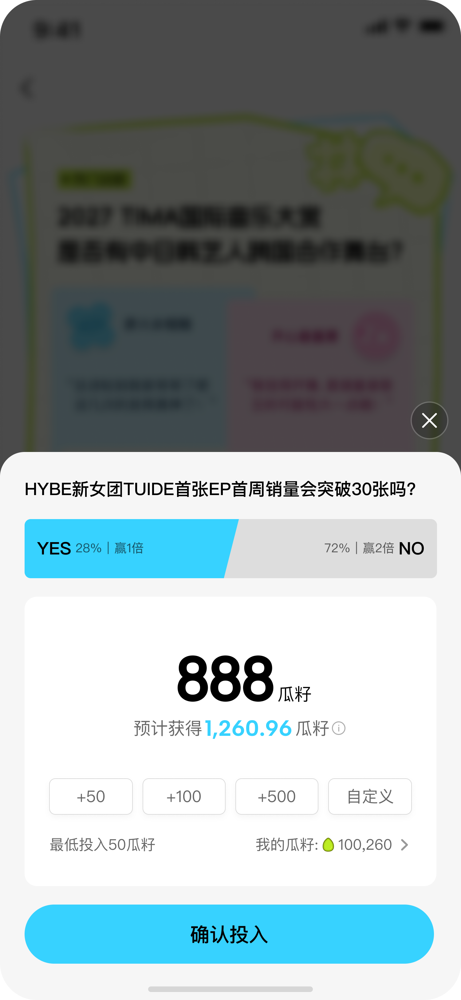
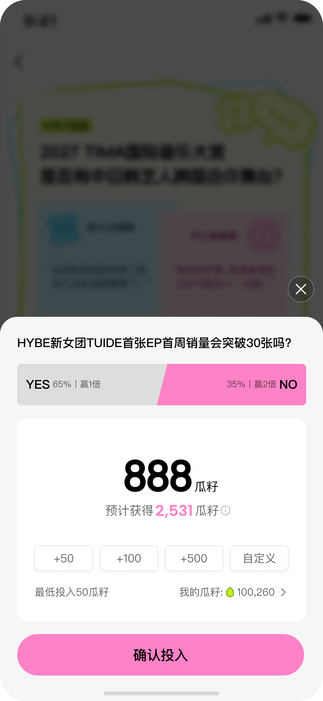

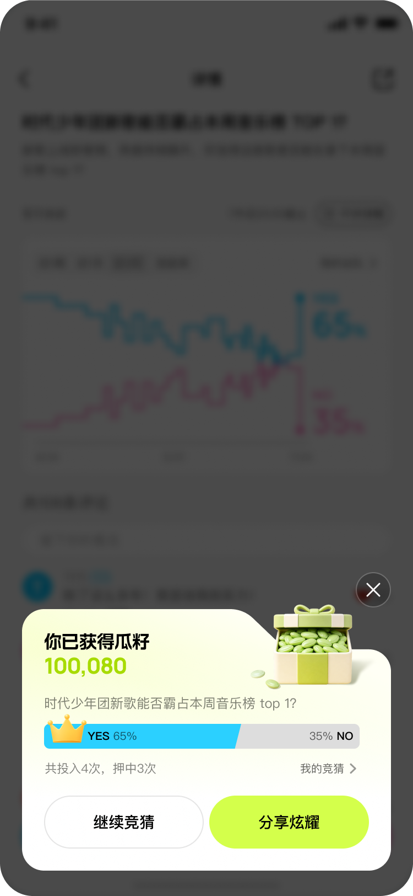
交互功能设计
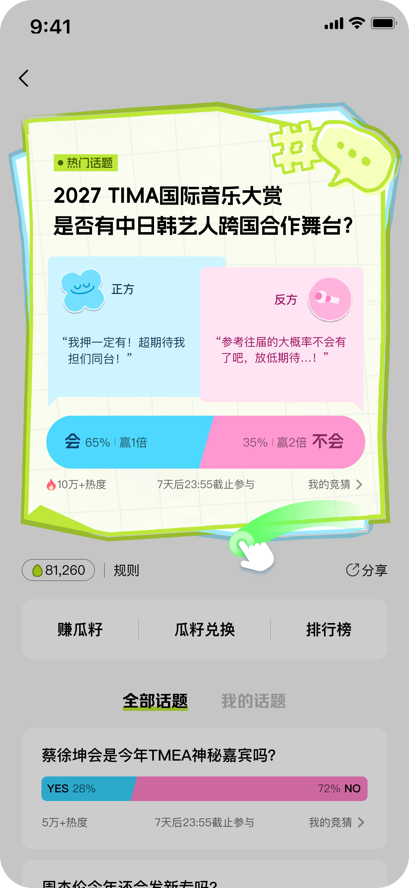
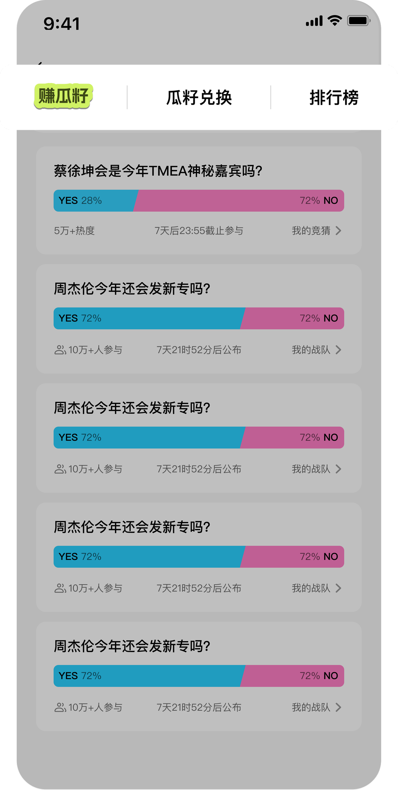
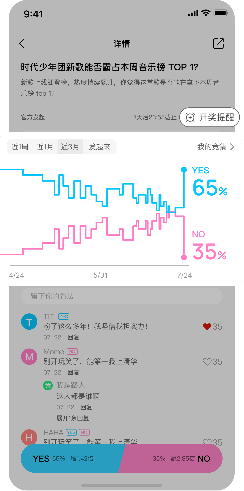

瓜籽经济与广告链路
广告不在活动入口打断用户，而是在投票意愿已经形成、瓜籽出现缺口时，成为最直接的补充方式。
不足态承接广告
用户已经选好话题与阵营
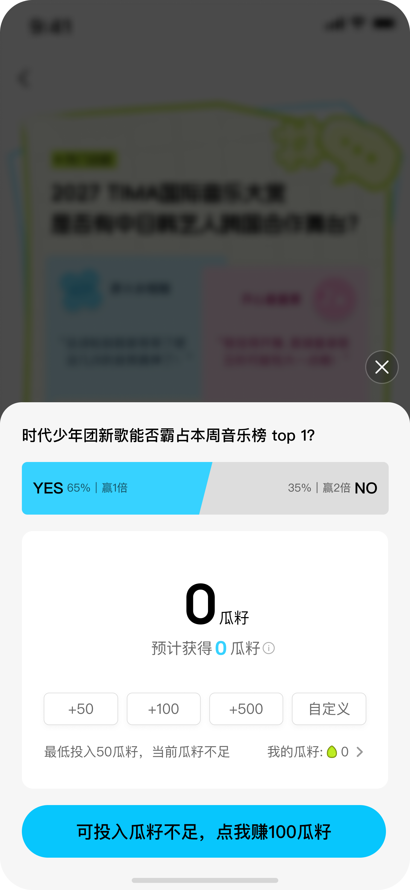
任务建立价值锚点
日常任务与广告收益形成对比
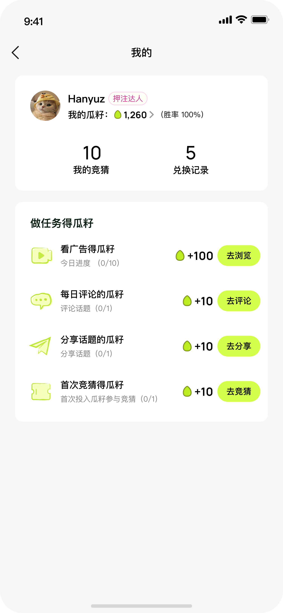
奖励完成价值回流
让瓜籽既能投票，也能兑换
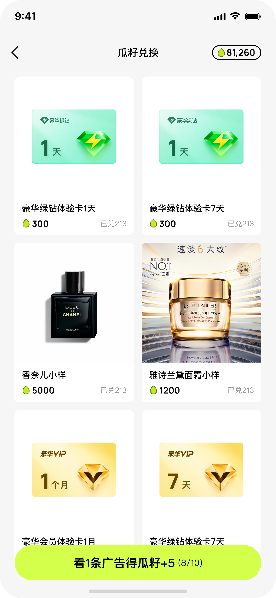
二期功能
用户自发话题
开放创建入口，让用户围绕热点、艺人与作品发起竞猜，持续补充社区内容。
多元选项池
话题不再局限于正反两方，可同时加入多个候选艺人或作品。
03
收入增长
星宠蓄电屋
负责星宠蓄电屋二期玩法设计，在单机养成中嵌入关系链，把个人游玩变成可回流的社交行为。
项目背景
星宠蓄电屋是音乐推下的养成小游戏。粉丝饲养发电宠物、收集电力值，为艺人发电推歌。
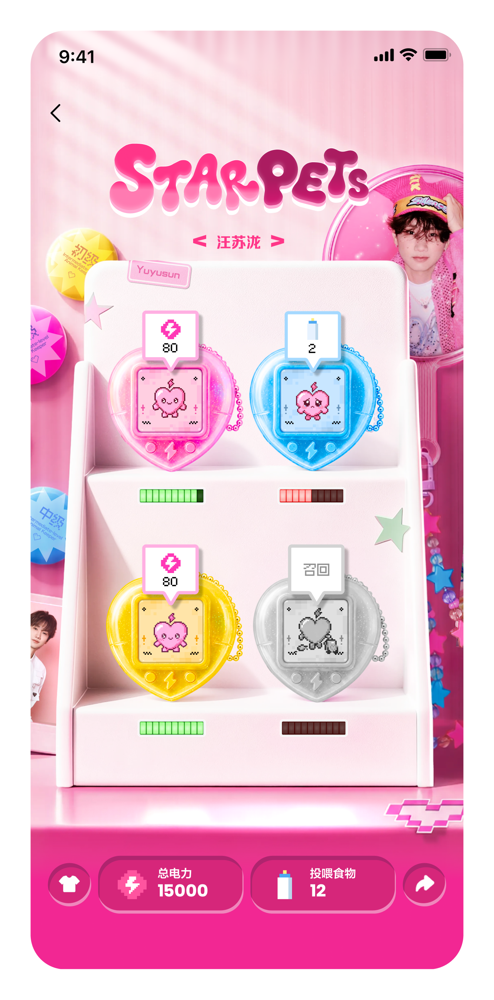
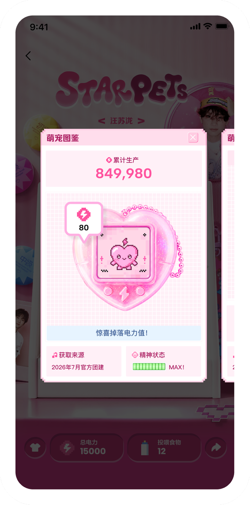
问题现状
目前是纯单机养成：用户喂养、发电、收电，全程只和系统交互，粉丝之间没有任何关系。
设计机会
加入关系链，让同一粉丝站内的用户可以互相串门，把单机养成接回集体语境。
玩法思路
参考 QQ 农场偷菜机制，同一粉丝站内的用户可以串门偷电，激励每日上线及时收电与偷电。
目标
提高日活与启动次数
通过串门带来额外回访机会，拉动日活与单日启动次数，并转化成增量广告曝光。
广告机会
把社交行为接进广告
- 看广告获得额外偷电次数
- 看广告帮好友投喂 / 召回，获取额外电力值
核心动作
串门玩法拆成利己与利他两条路径，再用限制规则控制节奏与广告转化。
利己：免费薅电力值
串门偷未收取的电力
好友未及时收电时，可以串门偷走一部分电力值。
随机拍好友星宠掉电
没有串门任务时随机出发，拍一拍好友星宠掉落电力值。
利他：帮好友喂养拿电力
看广告帮好友召回
帮好友召回星宠，奖励大额电力值，同时承接广告。
帮好友投喂并掉电
消耗自己的奶瓶帮好友投喂，额外掉落电力值。
玩法限制
- 同一用户每天只能被同一个人偷一次
- 每日免费偷电 10 次，额外机会需观看广告
- 单次可偷每只星宠未及时收取总电力的 3–6%
核心玩法设计
把串门偷电收束成一条清晰路径：从自己的蓄电屋出发，找到可偷好友，完成偷电，次数不足时再看广告续航。
串门路径


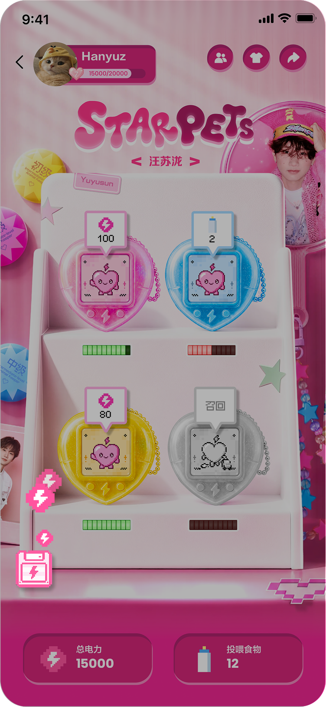


代喂
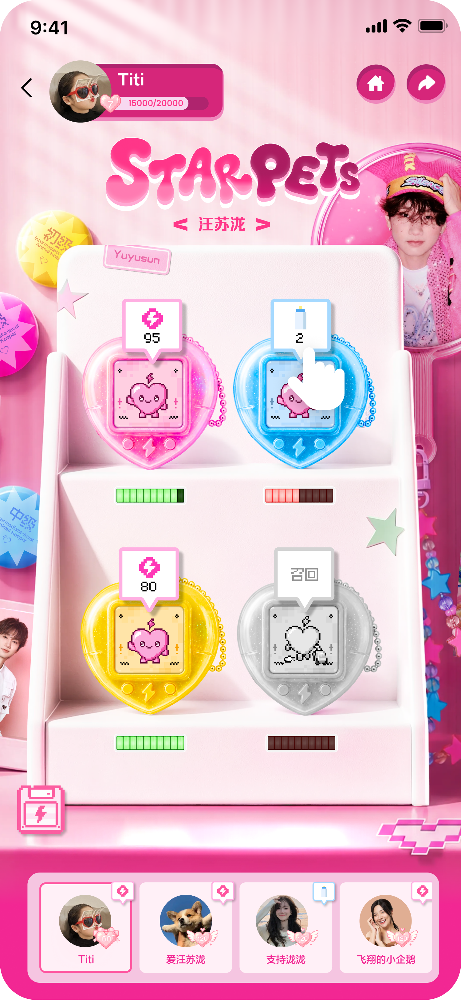
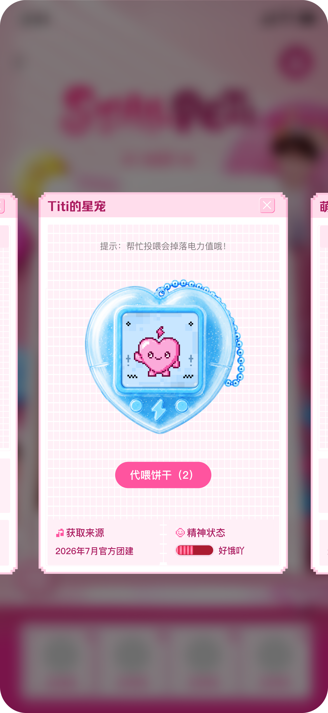
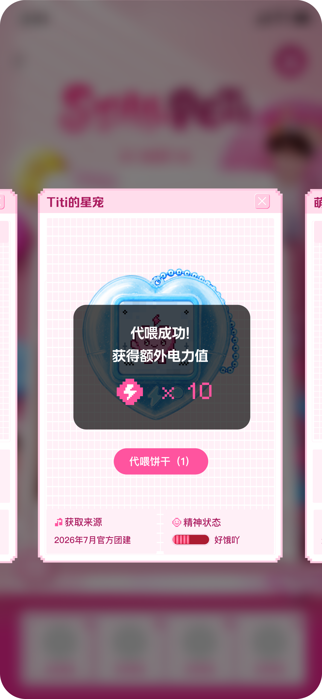
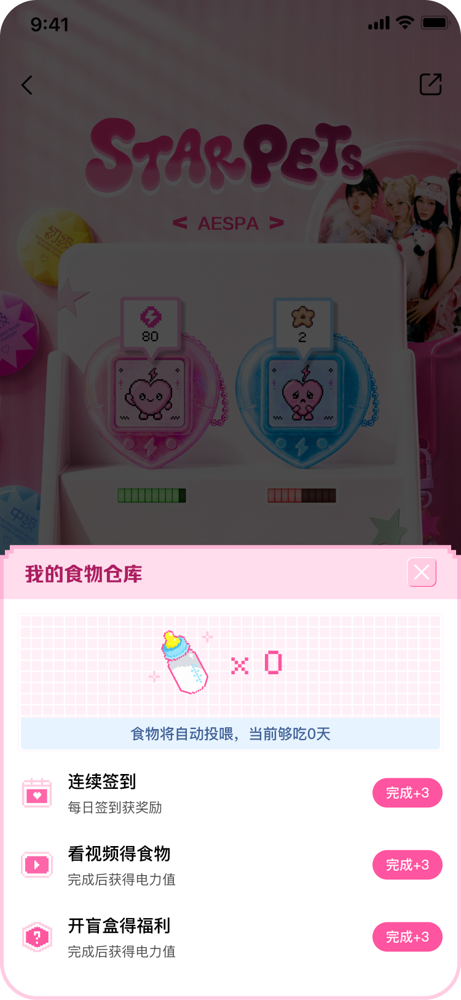
代喂消耗玩家自己的奶瓶，所以额外发放电力值作为动机。
帮召回
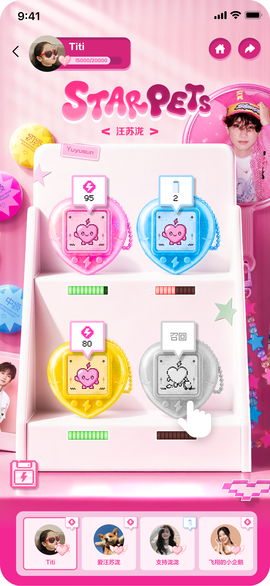
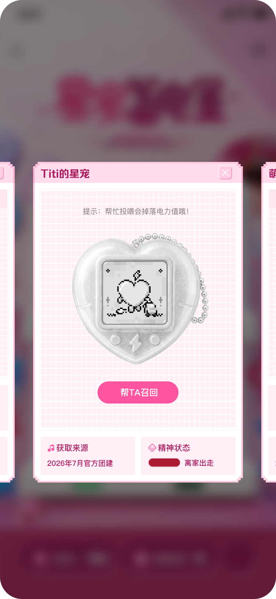
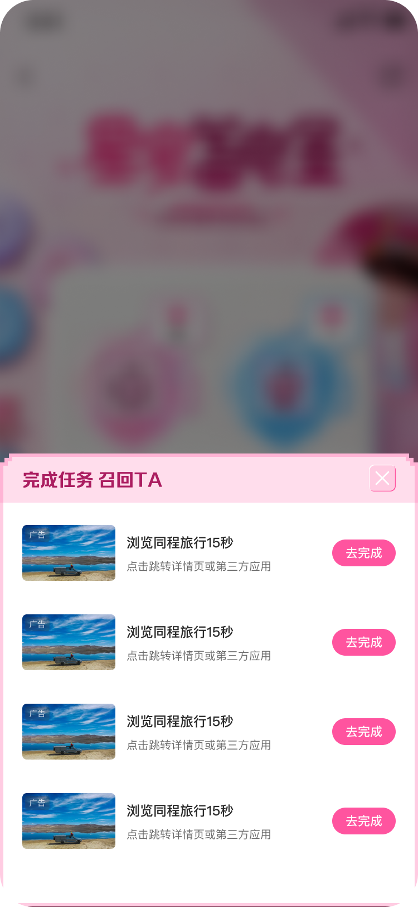
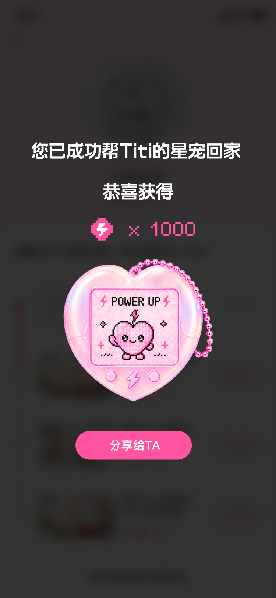
复盘思考与成长
学会先看指标。 以前判断方案的标准是体验顺不顺，现在会先问它影响哪个指标——拉新、次留，还是广告观看率。指标不同，取舍完全不同。
学会与产品、开发一起打磨项目。 从接到需求就直接出图，到先和产品对齐目标与约束，再和开发一起过方案、补状态、跟走查。方案不是一次性交付，而是在评审、联调和走查里一点点收紧，直到可以真正上线。
学会交付完整链路。 从只画主流程，到把空态、加载、失败、超时、无权限一并输出。交给开发的是一条能直接落地的完整链路，而不是一条最顺的路径。
04
收入增长
京东双十一
Placeholder：项目一句话说明。
框架占位：后续补充内容。